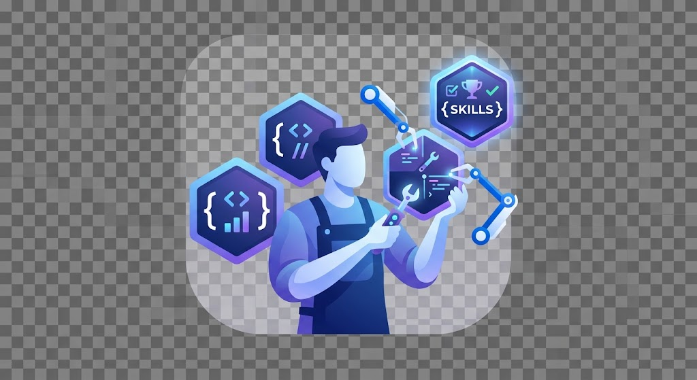
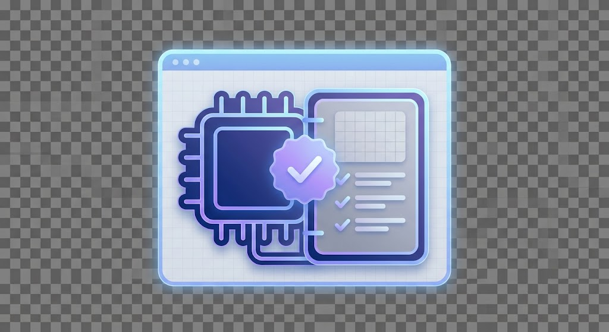
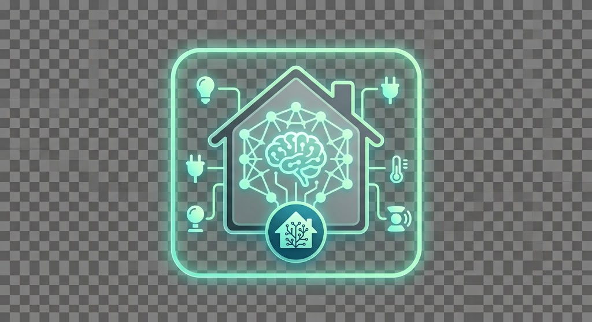

Skill builder
We build four different skills.
I Hope The OPT stills exist when we finish the Master.
We build four different skills.

A landing page showing the different skills.

A local page that saves it in Notion.

Run a local AI model for Home Assistant.